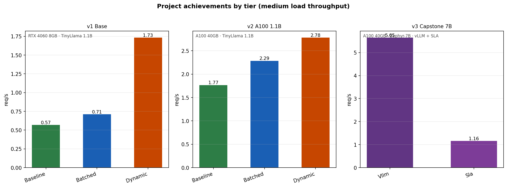
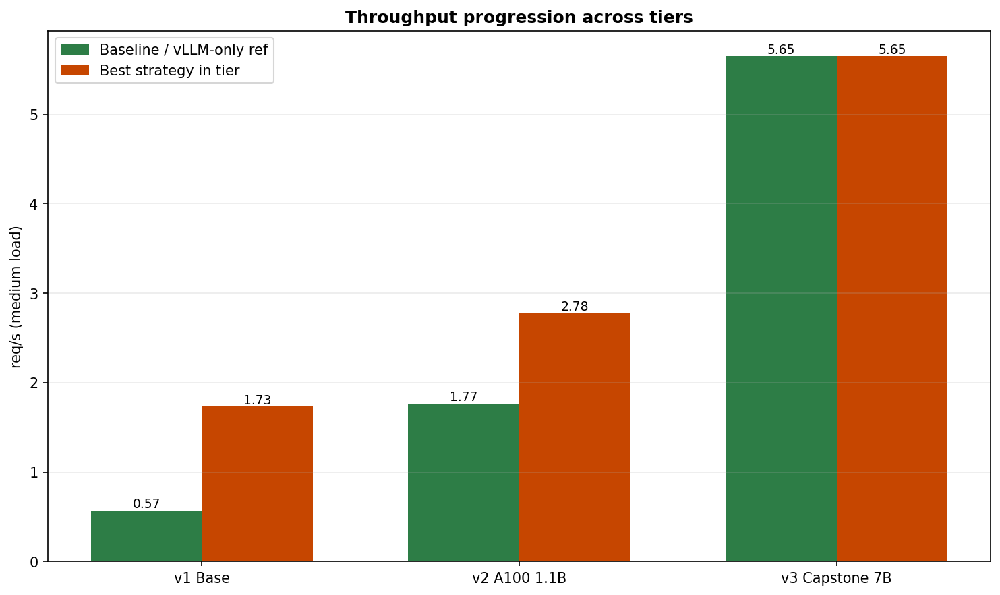
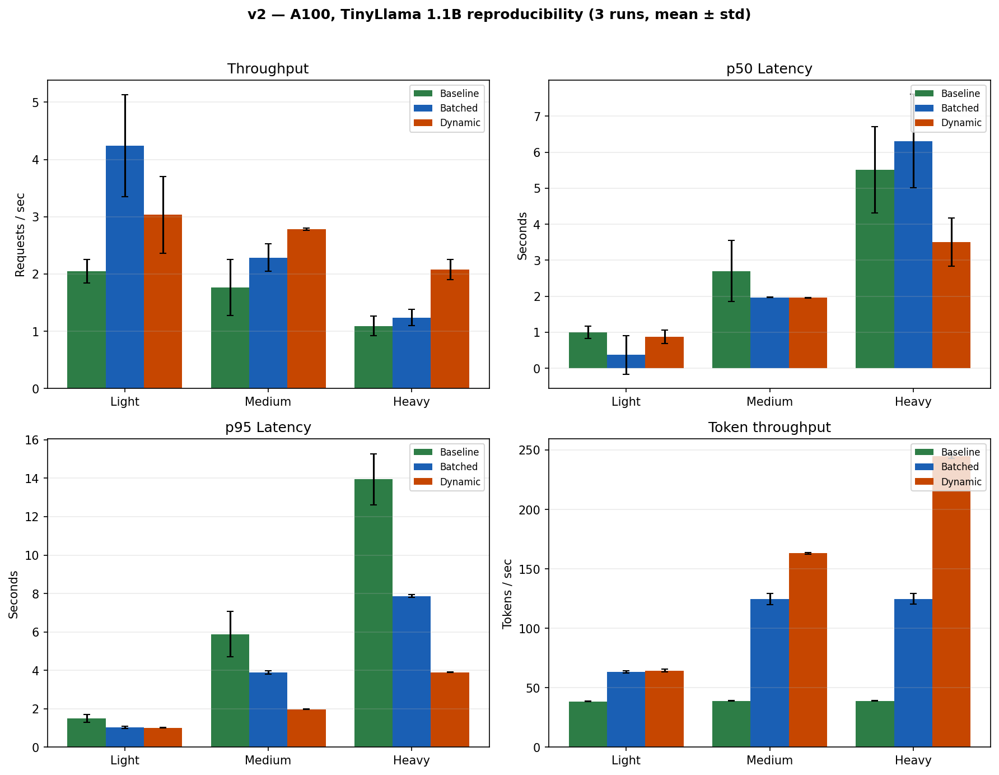
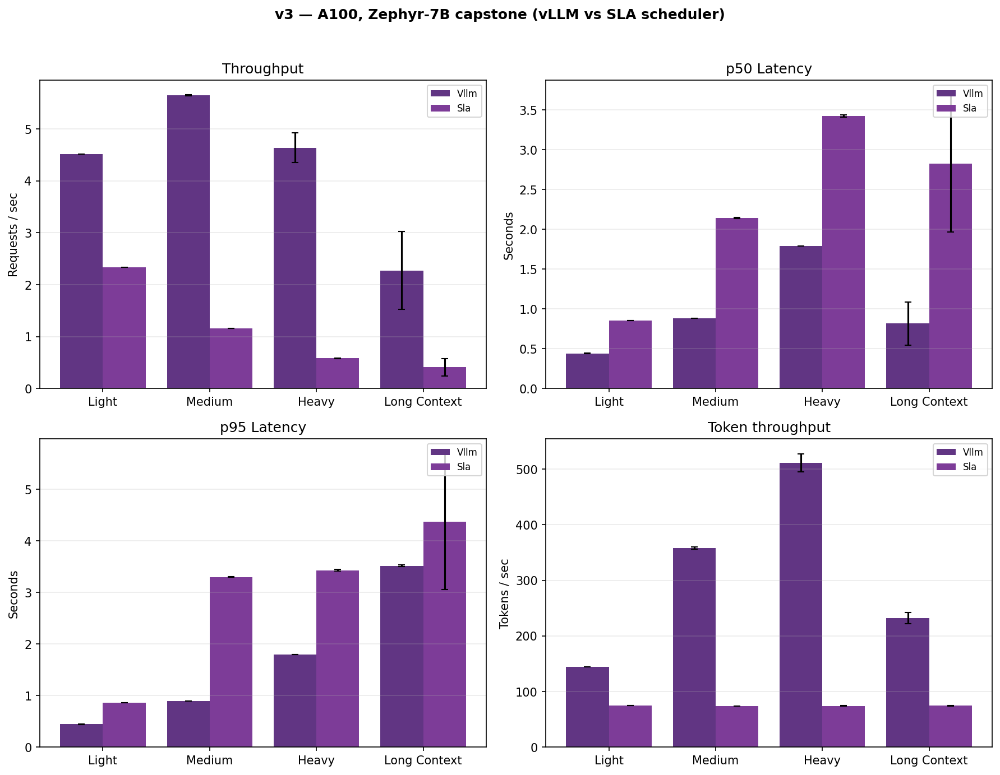

v1 — RTX 4060, TinyLlama 1.1B
| Strategy | Medium req/s | Medium p50 | Achievement |
|---|---|---|---|
| Baseline | 0.57 | 8.32s | — |
| Batched | 0.71 | 6.21s | +25% req/s |
| Dynamic | 1.73 | 2.23s | ~3× vs baseline |




| Strategy | Medium req/s | Medium p50 | Achievement |
|---|---|---|---|
| Baseline | 0.57 | 8.32s | — |
| Batched | 0.71 | 6.21s | +25% req/s |
| Dynamic | 1.73 | 2.23s | ~3× vs baseline |
| Strategy | Medium req/s | Medium p50 | GPU util (CSV) |
|---|---|---|---|
| Baseline | 1.77 ± 0.49 | 2.70s | ~27% |
| Batched | 2.29 ± 0.24 | 1.97s | ~27% |
| Dynamic | 2.78 ± 0.02 | 1.96s | ~28% |

| Strategy | Medium req/s | Medium p50 | Medium p99 | GPU util |
|---|---|---|---|---|
| vLLM | 5.65 | 0.88s | 0.89s | ~90% |
| SLA + vLLM | 1.19 | 4.25s | 4.29s | ~91% |
